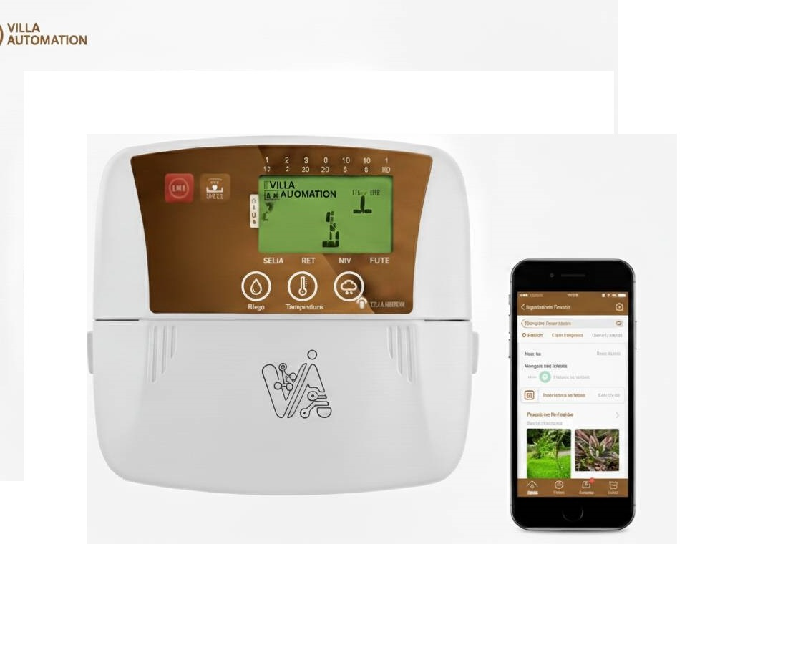

Controladores Inteligentes y Prototipos
En este espacio te mostramos los diferentes proyectos en controladores inteligentes para aplicaciones en diferentes areas.
En Villa Automation SAC desarrollamos controladores inteligentes de alto rendimiento diseñados para automatizar, supervisar y optimizar procesos industriales, agrícolas y científicos. Nuestros equipos integran tecnología IoT, control avanzado y electrónica robusta para ofrecer soluciones confiables y escalables. Un ejemplo el controlador de la imagen arriba tiene las siguiente carateristicas:
- Control en tiempo real con algoritmos PID, MPC e IA.
- Comunicación inalámbrica: Wi-Fi, Bluetooth, LoRa y GSM.
- Pantallas LCD/OLED táctiles según modelo.
- Registro de datos en memoria local y nube.
- Compatibilidad con sensores industriales y protocolos estándar.
- Diseño modular para expansiones y personalización.
- Software seguro y actualizable .
Aplicaciones
- Agricultura inteligente.
- Comunicación inalámbrica: Wi-Fi, Bluetooth, LoRa y GSM.
- Monitoreo ambiental y climático.
- Control de motores, bombas y actuadores.
- Instrumentación científica y educativa.

Integración y Plataforma
- Monitorear variables en tiempo real mediante nuestro aplicativo en Play Store .
- Recibir alertas inteligentes.
- Analizar tendencias y generar reportes.
- Acceder desde cualquier dispositivo (PC/Tablet/Mobile).
üì≤ Descargar en Google Play
- Desarrollo 100% peruano
- Soporte técnico especializado.
- Personalización para cada proyecto.
- Actualizaciones continuas.
- Alta confiabilidad y precisión.
Desarrollo de Controladores Inteligentes de Calidad de Aire y Gases
Además de nuestras soluciones robóticas avanzadas, en Villa Automation SAC hemos desarrollado una línea de controladores inteligentes diseñados para monitorear, analizar y gestionar variables ambientales críticas. Estos equipos representan un paso fundamental hacia la modernización de los sistemas de seguridad, salud y automatización industrial. Nuestros controladores inteligentes para calidad de aire y detección de gases integran sensores de alta precisión, procesamiento digital avanzado y algoritmos de análisis predictivo que permiten identificar cambios en el ambiente en tiempo real. Gracias a su arquitectura modular, pueden adaptarse a diversos entornos: invernaderos, laboratorios, industrias, espacios cerrados, unidades móviles y sistemas de defensa.


Estos dispositivos no solo brindan mediciones, sino que actúan como sistemas de decisión, permitiendo automatizar procesos, prevenir accidentes y garantizar ambientes seguros y eficientes. Su diseño robusto, intuitivo y adaptable los convierte en una herramienta indispensable para sectores como agricultura, minería, salud, defensa, educación, investigación y seguridad industrial. La capacidad de integrar estos controladores con robots, actuadores y sistemas digitales permite crear un ecosistema tecnológico que refuerza la autonomía y la eficiencia de cualquier operación. En Villa Automation SAC estamos comprometidos con el desarrollo de soluciones inteligentes que respondan a las necesidades reales de nuestros clientes y contribuyan a un futuro más seguro, más saludable y más automatizado.


Monitoreo continuo de CO₂, CO, CH₄, humo y gases tóxicos. Análisis de calidad de aire, humedad y temperatura. Alarmas inteligentes según umbrales definidos por el usuario. Control automático de ventilación, extractores y sistemas de mitigación. Registro de datos en memoria y reporte para auditorías o investigación. Comunicación inalámbrica mediante Bluetooth, WiFi o radiofrecuencia. Compatibilidad con aplicaciones móviles y plataformas IoT
otros videos en you tube similares:
Presupuesto dependera la cantida de sensores y modulos
- Basico: 200.0 S/
- avanzado: 400.0 S/